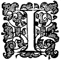

O,
El Arte de los Juegos de Manos expuesto en sus propios colores,
completa, llana, y exactamente, de manera que una persona ignorante pueda dello
aprender la perfecta maestría del mismo, tras un poco de práctica.
A cada Truco se añade la figura, donde fuere menester
para la instrucción.
La segunda Edición, con muchas adiciones.
Prestat nihili quam nihil facere.

LONDRES,
Impreso por T. H. para R. M. 1635.

 COrtés Lector, ¿no os maravilláis? si no lo hacéis, bien podéis hacerlo, de
ver tan ligero Panfleto tan presto gastado; mas ligeramente viene, y ligeramente
se va; es término de Juglar, y bien conviene al sujeto. ¿Queréis saber de dónde
vino primero? pues, de la Feria de Bartolomé: ¿queréis saber adónde se encamina? a la Feria otra vez; es un vagabundo, un errante, y como dije, así como ligeramente viene, así ligeramente se va; que tiene intención de ver no sólo la Feria de Bartolomé, sino todas las Ferias del Reino también, y por ello en el frontispicio, Hiccius Doccius es el Maestro de Postas, y lo que allí le falta, yo se lo doy aquí, una o dos palabras de mando, un término del arte, no tanto substancial como circunstancial, Celeriter,
vade, sobre setos y zanjas, a través de lo espeso y lo ralo, para llegar a vuestras Ferias. Roma para un Juglar: todo a galope, mas con deseo de daros plena satisfacción. Si os agrada, entonces compradlo y leedlo, si no, dejadlo para aquellos que gusten dello.
COrtés Lector, ¿no os maravilláis? si no lo hacéis, bien podéis hacerlo, de
ver tan ligero Panfleto tan presto gastado; mas ligeramente viene, y ligeramente
se va; es término de Juglar, y bien conviene al sujeto. ¿Queréis saber de dónde
vino primero? pues, de la Feria de Bartolomé: ¿queréis saber adónde se encamina? a la Feria otra vez; es un vagabundo, un errante, y como dije, así como ligeramente viene, así ligeramente se va; que tiene intención de ver no sólo la Feria de Bartolomé, sino todas las Ferias del Reino también, y por ello en el frontispicio, Hiccius Doccius es el Maestro de Postas, y lo que allí le falta, yo se lo doy aquí, una o dos palabras de mando, un término del arte, no tanto substancial como circunstancial, Celeriter,
vade, sobre setos y zanjas, a través de lo espeso y lo ralo, para llegar a vuestras Ferias. Roma para un Juglar: todo a galope, mas con deseo de daros plena satisfacción. Si os agrada, entonces compradlo y leedlo, si no, dejadlo para aquellos que gusten dello.
Adiós.


VIno primero al Reino por ciertos Egipcios, que fueron transportados acá, quienes creciendo a multitudes numerosas, se dispersaron por la mayor parte del Reino: quienes siendo muy expertos en este arte, y en la Quiromancia, engañaron a las gentes en todas partes dondequiera que llegaban. Ahora diversos vagabundos ingleses uniéndose a ellos en el tiempo aprendieron tanto su lengua como sus engañosos ardides, por lo cual al fin fueron descubiertos, y sobre ello en el siguiente Parlamento, hubo un estatuto promulgado: que quienquiera que transportase a un Egipcio, tendría una Multa impuesta sobre él; además, que quienquiera que tomase para sí los nombres de Egipcios, sería imputado a ellos como felonía, en tan alto grado, que no podrían tener su Libro concedido a ellos, cuyo estatuto fue puesto en ejecución, y desde aquel tiempo nuestro Reino ha sido bien descargado de aquellos Juglares Egipcios.PRestidigitación es una operación, por la cual uno puede parecer obrar cosas maravillosas, imposibles, e increíbles mediante agilidad, destreza, y ligereza de mano. Las partes de este Arte son principalmente dos. La primera está en el manejo de Bolas, Naipes, Dados, Dinero, etc. La segunda está en la Confederación.
EL fin de este Arte es bueno o malo, conforme es usado: Bueno, y lícito cuando es usado en Festivales, y alegres reuniones para procurar regocijo: especialmente si se hace sin deseo de estimación por encima de lo que somos. Malo, y del todo ilícito cuando se usa a propósito, para engañar, defraudar, o por vanagloria para ser estimado por encima de lo que es justo y honesto.
PRimeramente, debe ser uno de espíritu impudente y audaz, de manera que pueda poner buena cara al asunto.
Segundo, debe tener un manejo ágil y limpio.
Tercero, debe tener términos extraños, y palabras enfáticas, para dar gracia y adornar sus acciones, y más aún para asombrar a los mirones.
Cuarto, y último, tal gesto del cuerpo como pueda llevar los ojos de los espectadores de una estricta y diligente observación de su manera de manejar.
EL Operador así cualificado debe tener sus Implementos a propósito para jugar con ellos: y primero debe tener tres Copas, hechas de bronce, o placa de Crooked lane:

Estas Copas deben ser todas de un mismo tamaño, y el fondo de cada una dellas debe estar puesto un poco dentro de la copa; mirad la siguiente figura, pues por ella están verdaderamente representadas, tanto en forma como en grandeza: está notada con la letra B. También debe tener cuatro Bolas, hechas de Corcho del tamaño de pequeñas Nueces moscadas. Primero, debe practicar sostener estas bolas de corcho, dos o tres dellas a la vez en una mano. El mejor lugar, y el más presto para sostener una bola es entre la yema del pulgar, y la palma de la mano; mas si sostenéis más de una a la vez, entre vuestros dedos hacia los fondos. El lugar para sostener una gran bola es entre vuestros dos dedos medianos. Recordad en vuestro juego siempre mantener la palma de vuestra mano hacia abajo: Después que hayáis una vez aprendido a sostener estas bolas airosamente, podéis obrar diversos trucos extraños y deleitosos.
Mas ya parezca que arrojáis vuestra bola al aire, o a vuestra boca, o a vuestra otra mano, siempre retenerla en la misma mano, siempre recordando mantener la palma de vuestra mano hacia abajo, y fuera de la vista. Ahora para comenzar:
El que ha de jugar debe sentarse en el lado más lejano de una Mesa, la cual debe estar cubierta con un tapete: en parte para impedir que las bolas rueden, y en parte para impedir que hagan ruido: asimismo debe poner su sombrero en su regazo, o sentarse de tal manera que pueda recibir cualquier cosa en su regazo, y hágales a todos sus espectadores sentarse: Entonces saque sus cuatro bolas, y ponga tres dellas sobre la mesa, (y retenga la cuarta en su mano derecha) y diga, Caballeros, aquí hay tres bolas veis, 1. Meredin, 2. Benedic, y 3. Presto Juan, entonces saque sus copas y sostenga todas tres en su mano derecha también, diciendo, Aquí hay también tres Copas, diciendo, Ved que no hay nada en ellas, ni tienen ningún fondo falso:

Entonces decid, Ved que las pondré todas en fila, y golpead todas en fila, y al golpearlas hacia abajo, llevad la bola que retenéis bajo la copa del medio, diciendo mientras las ponéis, Nada allí, allí, ni allí. Entonces mostrad vuestras manos, y decid, Caballeros, veis que aquí no hay nada en mis manos, y decid, Ahora para comenzar, y tomad con vuestra mano derecha una de las tres bolas que pusisteis, y decid esta es la primera, y con eso pareced ponerla en vuestra mano izquierda, y prestamente cerrad vuestra mano izquierda, y siendo cerrada, golpeadla a vuestro oído, diciendo, Esta es para la purga del cerebro, Presto vete, entonces moved ambas copas extremas (notadas con A, y B.) con ambas vuestras manos, diciendo, Y no hay nada allí ni allí, y al golpearlas abajo, llevad la bola en vuestra mano derecha bajo la Copa notada B.

Entonces con vuestra mano derecha tomad la segunda bola, y pareced ponerla en la mano izquierda (mas retenerla) cerrando vuestra mano izquierda a debido tiempo: entonces golpead vuestra mano izquierda a vuestra boca, pareced sorber la bola fuera de vuestra mano, y haced un gesto como si la tragaseis, entonces decid, Presto, y eso se ha ido veis, y con vuestra mano derecha moved la copa notada A, diciendo, Y no hay nada, y al golpearla abajo llevad la bola que retenéis, bajo della, así habéis llevado a cada copa una bola.

Entonces con vuestra mano derecha tomad la tercera Bola, y pareced ponerla en vuestra mano izquierda, cerrándola a debido tiempo, y entonces extendedla desde vos diciendo, vade, couragious, y abrid vuestra mano, y soplad un soplo, mirando arriba como si la vieseis volando lejos, y decid passa couragious, y eso se ha ido: entonces tomad las copas una tras otra, y decid, no obstante Caballeros, hay una, hay dos, y hay todas tres otra vez: Entonces cubridlas y decid, ved Caballeros, las cubriré todas otra vez. Entonces decid ahora por la primera, entonces con vuestra mano derecha tomad la primera copa, y con vuestra mano izquierda tomad la bola que está bajo della, diciendo, ved, la tomo, y al poner la copa abajo otra vez, llevad la bola en vuestra mano derecha bajo della, entonces con vuestra mano derecha tomad la bola fuera de vuestra mano izquierda, pareced ponerla en vuestro bolsillo (mas retenerla) diciendo, vade, eso se ha ido a mi bolsillo veis, entonces tomad con vuestra mano derecha la segunda copa, y con vuestra mano izquierda tomad la bola de bajo della, y decid, ved, tomo esta también limpiamente, y al poner la copa abajo, llevad la bola que retenéis bajo della, y entonces con vuestra mano derecha tomad la bola fuera de vuestra izquierda, y pareced ponerla en vuestro bolsillo, (mas retenerla) diciendo, Iubeo, y eso se ha ido a mi bolsillo: entonces con vuestra mano derecha tomad la tercera y última copa, y con vuestra mano izquierda tomad la bola de bajo della, y decid, aquí tomo mi última, y al poner la copa abajo, llevad la bola que está en vuestra mano derecha bajo della, y entonces con vuestra mano derecha tomad la bola fuera de vuestra mano izquierda, y pareced ponerla en vuestro bolsillo (mas retenerla) y decid vade, se ha ido a mi bolsillo;

entonces tomad vuestras copas ordenadamente, diciendo, Caballeros, aquí hay una veis, aquí hay dos, y aquí están todas tres otra vez; y al poner la última copa notada A llevad la bola que retenéis en vuestra mano bajo della.

Entonces tomad una de las tres bolas con vuestra mano derecha, y pareced ponerla bajo la copa B, mas retenerla, y entonces decid por el polvo de la experiencia, Iubeo, ven cuando te mando bajo esta copa A, entonces tomad B, y decid, veis señores, desdeña quedarse bajo esta copa, mas se ha metido bajo aquí: entonces tomad la copa A. y se maravillarán de cómo llegó allí. Entonces decid Caballeros, y veis aquí hay sólo una, y al ponerla abajo, llevad la que está en vuestra mano derecha bajo della, entonces con vuestra mano derecha tomad la segunda Bola, y pareced ponerla en vuestra mano izquierda, cerrando vuestra mano izquierda a debido tiempo:

entonces sostened vuestra dicha mano izquierda lejos de vos, y pronunciad estas palabras con un Revoca stivoca (abrid vuestra mano lanzándola arriba) eso se ha ido, entonces tomad la copa A, y decid, ved aquí están ambas juntas; Entonces decid aquí hay sólo dos, y al ponerla abajo, llevad la bola que retenéis en vuestra mano derecha bajo della.

Entonces con vuestra mano derecha tomad la tercera bola, y pareced ponerla en vuestra mano izquierda, y cerrándola a debido tiempo, diciendo, esta es mi última Bola, vade passa couragious, (abrid vuestra mano entonces, lanzándola arriba, y mirando fijamente tras della) y eso se ha ido veis, entonces tomad la copa A, y decid, aquí están todas tres otra vez.
Poned vuestras copas entonces todas en fila otra vez, y bajo una dellas, como D, llevad vuestra cuarta bola que retenéis en vuestra mano, y poned las otras tres bolas a un lado.

Entonces con vuestra mano derecha tomad la primera bola, y pareced ponerla en vuestra mano izquierda, cerrando vuestra dicha mano izquierda a debido tiempo, entonces como si estuvieseis a los dados, arrojad vuestra mano izquierda a la copa D, y soplad tras della, diciendo, vade pas, y se ha ido, entonces tomad la copa notada A, y golpeadla sobre la copa D, y al golpearla, llevad la bola que retenéis en vuestra mano derecha sobre el tope de la copa D.

Entonces tomad la segunda bola con vuestra mano derecha, y pareced ponerla en vuestra izquierda, cerrándola a debido tiempo, y como hicisteis antes: ahora de igual manera pareced hacer que la misma se desvanezca con una palabra de mando, entonces tomad la copa C, y golpeadla sobre la copa A, y al golpearla, llevad la bola que retenéis en vuestra mano derecha, sobre el tope de la copa notada A,

Así entonces habéis llevado bajo cada copa una bola, entonces tomad la tercera bola, pareciendo desvanecerla como las dos primeras, mas retenerla, entonces mostrad bajo cada copa una, lo cual será muy extraño.
Entonces tomad una copa en vuestra mano derecha, y golpeadla sobre otra, diciendo, ved Caballeros pondré una copa sobre otra, y al golpearla, llevad la bola que retenéis en vuestra mano derecha sobre el tope de la copa más baja: mirad la siguiente figura.

Entonces tomad una bola, y pareced arrojarla al aire, y mirando fijamente tras della, decid, vade, eso se ha ido, entonces con vuestra mano derecha tomad la copa más alta, decid, ved aquí se ha metido entre mis copas, y al golpearla abajo otra vez, llevad la bola que retenéis bajo della.

Entonces con vuestra mano derecha tomad la segunda bola, y pareced ponerla en vuestra mano izquierda, cerrándola a debido tiempo: entonces abrid vuestra mano izquierda, lanzándola, decid, vade, y eso se ha ido, entonces con vuestra mano derecha tomad la copa más alta, y decid, veis Caballeros, están acomodados como un joven y una Doncella en la cama juntos, y al ponerla abajo, llevad la bola que retenéis.

Entonces con vuestra mano derecha tomad la tercera bola, y pareced ponerla en vuestra mano izquierda, mas retenerla, cerrando vuestra mano izquierda a debido tiempo: entonces sostenerla lejos de vos, y entonces abrid vuestra mano, lanzándola arriba, y boquiabierto tras della, decid, Mountifilede, monta, eso se ha ido, y entonces tomad la copa y decid, aquí están todas tres otra vez. Entonces cubridlas otra vez, y decid sola no es nada, entonces golpead la tercera copa sobre ellas, diciendo, mas doble es algo.

Entonces podéis parecer sacar todos los tres corchos del tope de la copa superior, haciendo que se desvanezcan uno tras otro, como os he enseñado suficientemente antes, lo cual puede ser realizado por esa una bola que retenéis en vuestra mano derecha.
Y por último, tomad la copa más alta, y ponedla primero por sí misma, entonces con ambas manos ágilmente alzando las otras dos copas, barajadlas una sobre otra, y las bolas no caerán, y así se pensará que habéis sacado las tres bolas de los fondos de las dos copas más altas. Podría enseñaros a variar estos trucos de cien maneras, mas dejo eso a aquellos que intentan seguir el oficio.
POned una de vuestras copas sobre una Mesa, y sacad de vuestro bolsillo una buena y grande bola de taburete, y decid, golpeando vuestra mano con la bola en ella bajo la Mesa, Mis amos ¿no pensaríais que es un bonito truco que yo haga que esta bola venga a través de la mesa a la copa:

Entonces alguno u otro tomará la copa para ver si es así; entonces sosteniendo la bola entre vuestros dos dedos medianos de vuestra mano derecha, miradlo fijamente a la cara, y decid mas no debéis mover mi copa de su lugar, mientras he dicho mis palabras de mando: con eso poned vuestra copa en su antiguo lugar, y al ponerla ágilmente, llevad la bolabajo della, y decid, Hei Fortuna nunquam credo, vade couragious: Ahora ved (decid) si está allí o no, lo cual cuando lo vean imaginarán que fue conjurada en ella por virtud de vuestras palabras.
REtened una pequeña bola en vuestra mano, y poned tres otras pequeñas bolas sobre la mesa: entonces con vuestra mano derecha tomad una de las tres bolas, y ponedla en vuestra mano izquierda, diciendo, Hay una, entonces tomad la segunda, y poned esa en vuestra mano izquierda también, y con ello asimismo poned la bola que retenéis en vuestra mano derecha, diciendo, Y hay dos (mas sabéis que hay tres ya) y cerrad vuestra mano a debido tiempo: entonces tomad la tercera bola en vuestra mano derecha, y golpead vuestra mano derecha a la parte superior de vuestro brazo izquierdo, reteniendo la bola firmemente pronunciad estas palabras: Iubeo celeriter, venid todas a mi mano cuando os lo mando. Entonces retirad vuestra mano derecha (sosteniendo la palma della hacia abajo) diciendo, Eso se ha ido Caballeros: entonces abrid vuestra mano izquierda, y decid, Aquí están todas tres juntas, y ponedlas sobre la Mesa.
TOmad una de las bolas en vuestra mano derecha, y ponedla en vuestra izquierda, sosteniéndola firmemente entre vuestro dedo índice y pulgar de vuestra dicha mano izquierda. Entonces con vuestro dedo índice y pulgar de vuestra mano derecha (mas sed ágil) pareced sacar una bola de otra, lo cual podéis hacer deslizando la bola que retenéis en vuestra mano derecha entre el dedo índice y pulgar de la dicha mano, diciendo, Así por actividad he aprendido a hacer, de una pequeña bola para hacer dos: y todas de un tamaño, entonces poned todas cuatro bolas sobre la mesa.
COn vuestra mano derecha tomad una de las bolas, y pareced ponerla en la izquierda, mas retenerla, cerrando vuestra mano izquierda a debido tiempo, y decid, Hay una: entonces sostened vuestra mano lejos de vos. Entonces con vuestra mano derecha tomad otra, diciendo, Aquí tomo otra. Entonces pronunciad estas palabras, Mercus mercurius por el polvo de la experiencia, Iubeo; entonces abrid vuestra mano izquierda, diciendo, Eso se ha ido, y entonces abrid vuestra mano derecha y mostrad ambas juntas.
DEbéis tener una piedra de un tamaño razonable, tal que podáis bien ocultarla en vuestra mano, sentándoos de tal manera como he dicho antes, que podáis recibir cualquier cosa en vuestro regazo, sacad esta piedra de vuestro bolsillo, diciendo, Veis, Caballeros, aquí hay una piedra, una piedra milagrosa: ¿Queréis que se desvanezca, vade, o se vaya invisible; lo cual siendo dicho, retirad vuestra mano al lado de la mesa dejando que la piedra se deslice a vuestro regazo, en cuyo tiempo mirad alrededor vuestro, diciendo, escoged vosotros cual. Entonces extended vuestra mano y decid: Fortuna variabilis, lapis inestimabilis Iubeo, vade, vade, couragius. Abrid vuestra mano entonces lanzándola arriba, y soplad un soplo, y mirad arriba, diciendo, ¿Veis que se ha ido? Vuestro mirar arriba les hará mirar arriba, en cuyo tiempo podéis tomar la piedra otra vez en la otra mano, y deslizarla en vuestro bolsillo.
SAcad vuestra piedra otra vez de vuestro bolsillo, diciendo, aquí está una vez más, y la daré a cualquiera de vosotros para sostenerla, y extended vuestra mano a ellos, y abriendo vuestra mano, decid He aquí está. Entonces cuando alguno está a punto de tomarla, retirad vuestra mano al lado de la mesa, y haced vuestro manejo como antes, en cuyo tiempo decid, Mas debéis prometerme tomarla rápidamente:
Entonces dirá, Lo haré, entonces extended vuestra mano siendo cerrada, a él otra vez, y mientras se esfuerza, pensando tomarla rápidamente, sostened firme y decid, Vade couragious, celeriter vade: en cuyo tiempo podéis tomar la piedra en la otra mano, y sostenerla lejos de vos. Entonces abrid vuestra mano y decid, he aquí, Si podéis sostener a una linda Moza no más firme, cuando la tenéis, no daré un alfiler por vuestra habilidad.
TOmad el naipe que queráis, pelar el papel impreso de sobre él, y enrolladlo duramente, y haced un agujero en una nuez, y sacad la almendra, y entonces empujad dentro el naipe, después tapad el agujero de la Nuez primorosamente con cera, esta Nuez debéis tenerla en presteza sobre vos, y cuando estéis en vuestro juego, pedid tal naipe como encerrasteis en vuestra Nuez, o de otro modo tened uno en presteza, y decid, Veis Caballeros, aquí está tal naipe: entonces mojadlo, y pelad el lado impreso, enrolladlo, y de la manera usual llevadlo: Entonces sacad vuestra Nuez de vuestro bolsillo, y dadla a uno, y decid, Cascad esa Nuez, y decidme si podéis hallar el naipe allí, lo cual siendo hallado, se pensará muy extraño.
Entonces tened otra tal nuez similar, mas llena con Tinta, y tapada de la misma manera que vuestra otra Nuez fue, y dad esa a otro, y decidle que la casque, y ved qué puede hallar en esa, y tan pronto como la haya cascado, toda la tinta correrá alrededor de su boca, lo cual moverá más regocijo y risa que el anterior.
DEsead a alguno de vuestros espectadores que os acomode con un Cuchillo, el cual cuando hayáis conseguido, sostenedlo de tal manera que podáis cubrir el cuchillo entero con ambas vuestras manos, el extremo del mango exceptuado, y poned la punta dello a vuestro ojo, y decid, alguien golpéelo adentro con su puño, mas nadie lo hará, porque es cosa tan peligrosa: entonces poned vuestras manos sobre el borde de la Mesa, y mirando alrededor vuestro, decid, por qué qué nadie lo golpeará adentro, en cuyo tiempo dejad que el cuchillo se deslice abajo a vuestro regazo. Entonces ágilmente haced como si lo metieseis apresuradamente en vuestra boca, o sostenerlo en una mano, y golpearlo adentro con la otra (mas ágilmente) entonces haced dos o tres caras agrias, diciendo, algo de bebida, algo de bebida: o si no podéis decir, ahora alguno ponga su dedo en mi boca, y sáquelo otra vez; algunos dirán quizás me morderéis, decid, no os lo aseguro. Entonces cuando haya puesto su dedo en vuestra boca, lo sacará, y dirá, aquí no hay nada, (este tiempo es suficiente para llevar el Cuchillo fuera de vuestro regazo a vuestro bolsillo) decid otra vez, por qué, tenéis vuestro dedo fuera otra vez, ¿pensasteis sacar el cuchillo? si eso estuviera en mi boca, me mataría. El cuchillo está aquí en mi bolsillo, y con eso sacadlo, y entregadlo otra vez.
TOmad una bola y ponedla sobre la Mesa, y sosteniendo un cuchillo en una mano por la hoja, desead a alguien que tome la Bola que está sobre la Mesa, y la ponga sobre el mango del cuchillo, fingiendo que la soplaréis de allí invisiblemente, y cuando esté poniéndola, dadle un buen golpe en los nudillos.
ESte Pudín debe ser hecho de Estaño, consiste de doce pequeños aros hechos como Cinta, de manera que puedan casi caer uno a través del otro, y debe tener un pedazo de Lona atado sobre el extremo más grande dello, a fin de que no pueda herir vuestros dientes al golpearlo apresuradamente en vuestra boca. La figura dello sigue, y está marcada con las letras A A.

Sostened este Pudín (pues así es llamado) privadamente en vuestra mano izquierda con el extremo de Lona hacia arriba, y con vuestra mano derecha sacad una Bola de vuestro bolsillo, y decid, Si hay alguna Doncella que haya perdido su doncellez o vieja mujer que esté medio fuera de concepto de sí misma, porque sus vecinos no la juzgan tan joven como ella voluntariamente parecería ser, venga a mí, pues esta bola es remedio presente; entonces pareced poner la Bola en vuestra mano izquierda, mas dejadla deslizar a vuestro regazo, y golpead vuestro pudín en vuestra boca, lo cual se pensará ser la Bola que les mostrasteis: Entonces inclinad vuestra cabeza, y abrid vuestra boca, y el pudín se deslizará abajo en su longitud completa, lo cual con vuestra mano derecha podéis golpear arriba a vuestra boca otra vez: haced así tres o cuatro veces una tras otra, y la última vez podéis descargar vuestra boca dello en vuestra mano, y golpearlo en vuestro regazo sin ninguna sospecha, de manera que hagáis dos o tres caras agrias tras dello, como si estuviera atascado en vuestra garganta, y si practicáis golpear fácilmente con vuestro puño en cada lado de vuestra garganta, el Pudín parecerá tintinear como si estuviera tendido en vuestra garganta. Entonces decid así, tragan pudines en la tierra de alta Alemania, se deslizam abajo por sus gargantas antes que sus dientes puedan tomar posesión dellos.
Para el efectuar de este truco, debéis tener un cuchillo hecho para la ocasión, hecho con una muesca en el medio de la hoja, como está demostrado en la siguiente figura notada con la letra A.

Debéis ocultar la muesca con vuestro dedo, y entonces retorcerlo sobre la parte carnosa de vuestra nariz, y vuestra nariz parecerá como si estuviera medio cortada con el cuchillo.
DEbéis tener asimismo para el efectuar de esta ilusión, un Implemento a propósito. La figura dello sigue. Puede ser hecho de dos palos de saúco, empujando fuera la médula, y después pegados juntos, los extremos dellos deben tener un pedazo de corcho cortado hueco y pegado sobre ellos: entonces debe haber un pequeño cordel puesto a través dellos, los extremos dello deben salir en dos agujeros hechos en el lado exterior de cada palo de saúco.

Poned este Adminículo sobre la parte carnosa de vuestra nariz, entonces tirad un extremo de la cuerda, y después el otro, y se pensará que la cuerda viene completamente a través de vuestra nariz.
DEbéis tener para la realización de este truco, diversas fichas teniendo agujeros cortados fuera del medio dellas, entonces deben ser pegadas juntas tantas dellas como puedan hacer un estuche suficiente para contener un Dado: entonces pegad una ficha entera sobre el tope dellas, y tened una caja hecha de Estaño blanco para ajustarlas, mas dejadla ser más profunda que la pila pegada de Fichas; también haced una cubierta para esta caja. Primero, poned en la caja tres fichas sueltas, entonces poned la pila pegada de fichas con el agujero hacia arriba, entonces poned en el agujero un Dado, y por último tres otras fichas enteras sueltas, y cubridlo. Sacad esta caja de Fichas, y decid, Caballeros, aquí hay una caja de oro de Berbería, me fue dejada como un Legado por un amigo difunto, bajo condición de que lo emplease bien y honestamente. Ahora señores fue mi fortuna mientras viajaba, ser sorprendido por la noche, y así forzado a buscar alojamiento, y como sucedió, entré en una casa de entretenimiento, donde llamando a mi Hospedera, saqué mi capital, y dije, qué debo daros mi Hospedera por mi comida, bebida, y alojamiento esta noche? Mi amigo, dijo ella, debéis darme tres Coronas Francesas; con eso destapé mi caja y la puse sobre la Mesa (debe ser hecho con la boca de la caja hacia abajo) tomé mi caja de sobre las fichas, y le entregué tres de arriba, diciendo, ahí están; y echando mi ojo a un lado, divisé una linda moza bajando las escaleras; Corazón dulce, le dije a ella, qué te daré para yacer contigo esta noche? ella respondió, señor, por tres Coronas Francesas lo haréis: entonces empujé mi caja adelante, y le entregué tres del fondo, diciendo, ahí están.
Mas ahora dije a mi Hospedera, Hospedera, qué diréis si con un truco que tengo, hago que estas seis Coronas traigan todas las demás a través de la Mesa? Señor, dijo mi Hospedera, tendréis vuestra comida, bebida, y alojamiento por nada, y dijo la Moza, yacerás conmigo por nada. Entonces las destapé, diciendo, mas primero veamos si están aquí o no, y las mostré, cubriéndolas otra vez. Entonces (tomando a esas seis Fichas en mi mano, otras fichas sueltas tengo prestas en mi regazo) golpeo mi mano bajo la Mesa, diciendo Virtute lapidis, miraculosi lapidis, jubeo vade, celeritate vade. Entonces mezclo mis Fichas como si vinieran cayendo a través de la Mesa a mi mano, después las arrojo sobre la Mesa, diciendo, ahí están las Fichas, entonces tomo la caja arriba, presionando los lados della con mi dedo índice y pulgar (lo cual mantendrá la pila pegada de Fichas de deslizarse fuera) y dejo deslizar las Fichas pegadas a mi regazo, y digo no hay nada sino un Dado, arrojando la caja vacía a ellos, quién lo tendrá todo ahora, mi Hospedera o yo?

A, la figura de la Caja, BB la tapa de la Caja, C la pila de Fichas pegadas juntas, E el agujero para el Dado, D el Dado.
DEbéis tener dos anillos hechos de bronce, plata, o lo que queráis, de un tamaño, color, y semejanza salvo que uno debe tener una muesca cortada a través dello como está representado por la siguiente figura notada con X

El otro debe estar entero sin muesca; mostrad el Anillo entero, y ocultad el que tiene la muesca, y decid, ahora pondré este anillo a través de mi mejilla, y privadamente deslizad la muesca sobre un lado de vuestra boca, y ágilmente llevad el Anillo entero a vuestra manga, o ocultadlo en vuestra mano derecha: entonces tomad un pequeño palo que podáis tener en presteza, y deslizad el Anillo entero sobre él, sosteniendo vuestra mano sobre él alrededor del medio dello, y decid a alguien que sostenga ambos extremos del palo firme, y decid, ved este Anillo aquí en mi mejilla, gira redondo, y en verdad parecerá girar redondo si lo acariciáis ágilmente con vuestros dedos: y mientras percibís que fijan sus ojos atentamente sobre ese Anillo, sobre un repentino arrancadlo, y golpead sobre el palo con él instantáneamente, ocultándolo, y haciendo girar el otro Anillo, sostenéis vuestra mano sobre redondo alrededor del palo, y se pensará que habéis traído ese Anillo sobre el palo que estaba antes sobre vuestra mejilla.
DEbéis tener dos punzones, el uno hecho igual al otro en apariencia exterior, mas dejad que la hoja del uno sea hecha para deslizarse arriba dentro del mango: dejad que el otro sea un Punzón verdadero: Ocultad el falso, y mostrad el verdadero, después que lo hayáis mostrado, llevadlo a vuestro regazo. Entonces tomad el falso, y reclinando vuestra cabeza, haced como si lo empujaseis muy rígidamente, haciendo una cara mal favorecida todo el tiempo. Si sostenéis un pedazo de esponja en vuestra mano llenado con algo de sangre de oveja, presionándola, el punzón estando en vuestra frente como si fuera hasta el puño, causará más asombro y admiración entre los mirones. Instantáneamente guardad vuestro punzón, y tomad vuestro pañuelo, y limpiad la sangre, y decid, Iubeo vade vulnus à fronte.
DEbéis tener un Candado hecho para la ocasión, la figura dello sigue, un lado de su arco debe ser inmóvil, como ese marcado con A: el otro lado está notado con B, y debe ser clavado al cuerpo del candado, como puede aparecer en E, digo debe estar tan clavado que pueda jugar de acá para allá con facilidad. Este lado del arco debe tener una pierna como C, y entonces girar dentro del Candado; esta flexión debe tener dos muescas limadas en el lado interior, las cuales deben ser tan ordenadas que la una pueda cerrar o sostener los dos lados del arco tan juntos en el tope como sea posible, la otra muesca para sostener dichas partes de los arcos a una distancia proporcionable aseparados, que siendo cerrado sobre la mejilla, no pueda ni pellizcar demasiado duro, ni tampoco sostenerlo tan ligeramente que pueda ser sacado;

dejad que haya entonces una llave ajustada a él para abrirlo, como puede aparecer en B. Y por último, dejad que los arcos tengan diversas muescas limadas en ellos, así el lugar de la partición cuando el candado esté cerrado del todo será menos de todo sospechado. Por esta figura y direcciones podéis ajustaros de tal Candado si es que sois deseosos dello.
POdéis causar que alguien sostenga un tester de canto entre sus dientes: Tomad también otro tester y con vuestra mano izquierda ofreced ponerlo de canto entre los dientes de un segundo hombre, fingiendo que vuestra intención es girar ambos a cualquiera de sus bocas que deseen, y eso por virtud de vuestras palabras y circunstancias lo cual él no más pronto ensayará hacer, sino vosotros sosteniendo vuestro candado privadamente en vuestra mano derecha con vuestro dedo índice sobre la pierna C, podéis prestamente deslizarlo sobre el lado izquierdo su mejilla, y cerrarlo simplemente, lo cual podéis hacer presionando vuestro dicho dedo un poco abajo después de abundantes súplicas: el Candado habiendo colgado un tiempo, producid vuestra llave por algún artificio (como por un confederado o alguna persona descuidada) y abridlo, mas inmediatamente cerradlo doblemente, pues parecerá un candado verdadero, ni después de la vista ser sospechado por otro.
ESte truco no puede ser realizado en todo tiempo, sino solamente en Invierno, y en tales tiempos como nieve pueda ser tenida, y el que lo mostrará debe tener en presteza un puñado de sal. Sirviendo el tiempo, y la parte provista, dejadlo llamar por un Taburete de juntas, una jarra de cuarto, un puñado de nieve, un poco de agua, y un palo corto o vara, primero dejadlo verter un poco de agua sobre el tope del taburete, y sobre él dejadlo poner la jarra de cuarto, y poner la nieve en la jarra, la sal también, mas privadamente, entonces dejadlo sostener la jarra firme con su mano izquierda, y tomar el palo corto en su derecha, y con ello batir la nieve y sal en la jarra como si uno batiera para mantequilla, y en medio cuarto de hora la jarra se helará tan duro al taburete, que apenas podéis con ambas manos sacarla del taburete: hay una razón natural que puede ser dada para esto, la cual el que es escolar no necesita ser dicho, y para un Juglar común no querría tener tan sabio como para saber, por lo tanto lo omito.
La realización de este truco consiste en el enrollar de la estopa. Después que hayáis hecho un rollo en presteza, pedid una pipa de Tabaco, encendedla, y tomad una o dos chupadas, podéis taparla abajo con el un extremo de vuestro rollo de estopa, reteniéndola privadamente en vuestra mano: entonces entregad la Pipa a alguien más, y llevad la estopa a vuestra boca: entonces soplad gentilmente, y humo y fuego saldrán de vuestra boca, lo cual podéis continuar tanto tiempo como os plazca poniendo más estopa mientras se consume.
DEbéis proveer diversas suertes de Cintas, algunas negras, algunas azules, algunas verdes, algunas amarillas: medidlas, y al fin de cada vara haced un nudo corredizo, entonces enrollad cada cinta coloreada en una bola por sí misma, y disponed sobre vos, que podáis saber prestamente cuál tomar en un instante. Cuando sois llamado por tantas varas de tal color, llevad una bola de la misma a vuestra boca, y sacadla, recordando cuántos nudos han deslizado en vuestros dientes, entonces cortadla y entregadla.
ESte truco debe ser realizado con tres campanillas, debéis poner una campanilla en vuestra manga izquierda, entonces poner una Campanilla en una mano, y otra Campanilla en la otra mano (deben ser pequeñas campanillas morris) retirad vuestras manos, y privadamente llevad la campanilla en vuestra mano izquierda, a vuestra mano derecha: Entonces extended ambas vuestras manos ampliamente, y decid a dos personas que sostengan vuestras manos firme, mas primero sacudid vuestras manos y decid, ¿las oís? La campanilla que está en vuestra manga no será conocida por el traqueteo, sino que está en vuestra mano: Entonces decid, él ahora que es el más grande Putañero o Cornudo de vosotros dos, tendrá ambas campanillas, y el otro no tendrá ninguna en absoluto: abrid vuestras manos entonces, y mostradlas, y se pensará que tratáis por arte mágico.
DEbéis proveer un libro de papel en octavo, del grosor que os plazca; primero pasad siete hojas dello, y entonces sobre ambos lados abiertos, dibujad o pintad las imágenes de flores, entonces pasad siete hojas más, y pintad las mismas; haced así hasta que hayáis pasado el libro una vez completamente: Entonces a las más lejanas hojas pintadas, pegad una pequeña pestaña de papel o pergamino una directamente sobre otra: Entonces pasad el libro otra vez, y habiendo pasado cada sexta hoja, dibujad la imagen de flor de lis, y entonces pegad pestañas de pergamino sobre ellas como hicisteis sobre las primeras; mas estas pestañas deben todas estar un poco más bajas que las primeras. Entonces pasad el libro otra vez, y después de la quinta hoja, a través del libro es pasada, pintad cuernos, haced así hasta que hayáis pintado el libro lleno de imágenes, solamente dejad que haya una parte de las hojas papel limpio: habiendo así terminado el libro, cuando lo uséis, sostenedlo en vuestra mano izquierda, y con vuestra mano derecha, vuestro pulgar puesto sobre las pestañas de pergamino, mostradlas ordenada y ágilmente, mas con una cara audaz y atrevida, pues eso debe ser la gracia de todos vuestros trucos: decid, este libro no está pintado así como algunos de vosotros pueden suponer, sino que es de tal propiedad, que quienquiera que sople sobre él, dará la representación de cualquier cosa a la que esté naturalmente inclinado, y entonces pasad el libro, y decid, ved está todo papel limpio.
DEbéis tener la figura de un hombre hecha de madera, del tamaño de vuestro dedo pequeño, como puede aparecer por la figura notada C D, la cabeza della notada con A, debe ser hecha para quitarse y ponerse a placer, por medio de un alambre que está en el cuello, marcado con B: también debéis tener una gorra de tela con un pequeño agujero en la corona della, como F: Esta gorra debe tener una pequeña bolsa dentro para llevar la cabeza dentro. La bolsa debe estar primorosamente hecha, que no pueda fácilmente ser percibida; mostrad vuestro hombre a la compañía, diciendo, ved aquí caballeros, a este llamo mi Bonus Genius, entonces mostrad su gorra, diciendo, y esta es su casaca, decid además, mirad ahora tan fijamente sobre él como podáis, no obstante os engañaré, pues para eso he venido.

Entonces sostened vuestra gorra encima de vuestra cara, y tomad vuestro hombre en vuestra mano derecha, y poned su cabeza a través del agujero de la gorra, como podéis ver en F, diciendo, ahora está presto para ir de cualquier mensaje que tenga que enviarle; a España, Italia, o adonde quiera; mas debe tener algo para llevar sus gastos, con eso sacad vuestra mano derecha de bajo la gorra, y con ello el cuerpo, (mas privadamente) poniendo vuestra mano derecha en vuestro bolsillo, como si buscarais dinero, donde debéis dejar el cuerpo, y sacar vuestra mano, y decid, ahí hay tres coronas: Ahora vete entonces, girad la cabeza alrededor, y decid, mas mirará alrededor suyo antes de irse. Entonces decid (poniendo vuestro dedo índice sobre su corona) justo como empujo mi dedo abajo, así se desvanecerá, y con ello por la asistencia de vuestra mano izquierda que está bajo la gorra, llevad su cabeza a la pequeña bolsa dentro de la gorra: entonces girad vuestra gorra alrededor, y decid, ved aquí se ha ido: entonces tomad vuestra gorra, y sostenerla arriba otra vez, sacando la cabeza fuera de la pequeña bolsa, y decid, hei genius meus velocissimus, ubi, y silbad. Entonces empujad la cabeza arriba a través del agujero de la gorra, y sosteniendo la cabeza por el alambre, giradla alrededor; entonces prestamente poned cabeza y gorra en vuestro bolsillo.
HAced una caja de Madera, Estaño, o Bronce: dejad que el fondo caiga un cuarto de pulgada dentro de la caja, y pegad sobre él una capa de Cebada o tal grano similar: sacad la caja con el fondo hacia abajo, y decid, Caballeros, encontré a un Hombre del Campo yendo a comprar Cebada, y le dije que le vendería un penique dello, también multiplicaría un grano en tantos busheles como necesitase, entonces arrojad un grano de cebada en vuestra caja, y cubridlo con un sombrero, y al cubrirlo, girad el fondo al revés: entonces haced que alguien sople sobre el sombrero, entonces destaparlo, y pensarán extrañamente dello. Podéis hacer otra caja de madera como una campana para sostener justo tanto como vuestra antigua caja, y hacer un fondo a esta caja de suela de zapato de cuero, para empujar dentro del fondo de la campana: entonces llenarlo con cebada, y empujar arriba el fondo de cuero, pues mantendrá la cebada de caer tomad esta caja de vuestro bolsillo, y ponedla gentilmente sobre la mesa, y decid, ahora haré que toda la cebada vaya fuera de mi medida a mi campana, entonces con un sombrero cubrid la caja que tiene la cebada pegada a ella, y al cubrirla, giradla con la cebada hacia abajo: entonces decid, primero veamos si no hay nada bajo la campana, y golpeadla duro sobre la mesa, así el peso de la cebada empujará el fondo abajo; entonces decid a uno que sople duro sobre el sombrero, entonces tomadlo arriba, donde verán nada sino una medida vacía, entonces tomad la campana, y toda la cebada se verterá. Barredla entonces prestamente a vuestro sombrero o regazo, no sea que su ocupado escudriñar pueda acaso descubrir vuestro fondo de cuero.
TOmad un vaso bajo, llenarlo razonablemente lleno de Cerveza, y tomad un sixpence y ponedlo sobre la mesa, y poned el vaso de Cerveza sobre él, y mojando vuestro dedo en la Cerveza, decid, si está el sixpence dentro, o bajo el vaso. Algunos dirán quizás, está debajo: entonces decid, veamos, y tomad a la vez tanto sixpence como vaso (sostened el vaso de manera que ambas vuestras manos puedan ocultarlo completamente) y dejad que el vaso se deslice de lleno abajo a vuestro regazo, entonces haced como si lo arrojaseis lejos, mirando arriba tras ello. Entonces pareced sonaros la nariz, y dejad caer el sixpence sobre la mesa, diciendo, Me alegro de tener mi dinero otra vez: mas ahora (decid) qué ha sido del vaso? Entonces pareced sacarlo de vuestro bolsillo, diciendo, Soy un buen compañero, y no perdería de buena gana mi licor, entonces bebedlo. Este es un excelente truco si es rápida y primorosamente realizado. Aunque derraméis una parte de la Cerveza, no importa, tampoco es ninguna desgracia a ello, además podéis quitarlo muy bien.
DEbéis tener una mesa con dos buenos agujeros anchos hacia un extremo, también un paño a propósito para cubrir la mesa con, de manera que dicha cubierta pueda colgar hasta el suelo redondo alrededor de la mesa; también esta cubierta debe tener dos agujeros hechos en ella justo con los agujeros de la mesa, debéis también tener un plato de madera para el propósito, teniendo un agujero en el fondo para ajustar también a los agujeros de la mesa, y debe, como también la mesa, ser hecho para tomar en dos piezas: teniendo estos en presteza, debéis tener dos muchachos; el uno debe yacer a lo largo sobre la mesa con su espalda hacia arriba, y debe poner su cabeza a través del un agujero de la mesa, paño y todo; el otro debe sentarse bajo la mesa y poner su cabeza a través del otro agujero de la mesa, entonces poned el plato alrededor de su cuello, para hacer la vista más terrible de contemplar, podéis formar algún telar alrededor de los cuellos dellos, haciendo pequeños agujeros en ellos como si fueran venas, y embadurnadlo sobre con sangre de oveja, poniendo algo de sangre también y pequeños pedazos de hígado en el plato, y poned un brasero de carbones delante de la cabeza, esparciendo algo de azufre sobre los carbones; pues esto hará que la cabeza parezca tan pálida y lívida, como si en verdad estuviera separada del cuerpo.

La cabeza puede dar un suspiro o dos, y estará mejor. No dejéis que nadie esté presente mientras hacéis esto, tampoco cuando hayáis dado entrada, permitid a ninguno estar entrometiéndose, ni dejadlos quedarse largo.
DEbéis conseguir una bola hecha de madera, y sobre una mitad o lado della, debe la cara de un niño ser artificialmente tallada: en el lado de atrás de esta cara debe haber hecho un agujero, mas no muy profundo; este agujero debe ser llenado con Plomo, a fin de que pueda (la bola siendo echada en el agua) balancear la cara hacia arriba: entonces pintadla vivazmente con colores al óleo, y está hecho. Notad que no debe ser completamente tan grande como una bola de tenis. Pedid una jarra de vino de cuarto llenada con agua limpia hasta el cuello, teniendo vuestra cara en presteza, ocultada en vuestra mano derecha, tomad la jarra en vuestra mano izquierda, y ponedla sobre la Mesa, y decid, veis Caballeros, aquí no hay nada en la jarra sino agua, con eso golpead abajo la tapa de la jarra con vuestra mano derecha, y al golpearla abajo, deslizad la cara en la jarra, esto podéis hacer sin ninguna la menor sospecha. Entonces haced que todos se queden atrás, y si place, que os marquen tan estrechamente como puedan: con eso poned vuestra mano en vuestro bolsillo, y pareced sacar un puñado de polvo, y esparcirlo sobre la jarra, diciendo, Surge celeriter, por el polvo de la Experiencia, surge, entonces decidles que miren qué hay allí. De la misma manera podéis hacer que un Sapo aparezca, lo cual causará no pequeña admiración.
DEbéis conseguir un Embudo doble, eso es, dos Embudos soldados uno dentro del otro, de manera que podáis en el extremo pequeño verter una cantidad de vino, agua, o cualquier licor. Este Embudo debéis tenerlo presto llenado de antemano con cualquier licor que os plazca: pedid algo del mismo género: entonces sacad vuestro Embudo, y poniendo vuestro dedo medio al fondo dello, decid a alguien, o si no haced vos mismo vertedlo lleno, y bebedlo delante dellos, y girad el extremo ancho del Embudo hacia abajo, diciendo, Caballeros, todo se ha ido, y en un tris giraos, y al girar, pronunciad algunos términos de arte, retirad vuestro dedo del extremo estrecho, y dejad salir todo el licor que estaba entre los Embudos, y se pensará que es aquello que bebisteis del Embudo, y así podéis persuadirles que es el mismo.
DEbéis tener algún gran diente en presteza, como el diente de un Cerdo, un Becerro, o de un Caballo; este debéis retener privadamente en vuestra mano derecha, y con la misma mano sacar de vuestro bolsillo una pequeña bola de corcho, y habiendo usado algo de Retórica para persuadirles que es de alguna propiedad excelente, inclinad vuestra cabeza, y con ello tocad alguno de vuestros dientes más alejados, e inmediatamente dejad caer el diente que sostuvisteis en vuestra mano, diciendo, y esta es la moda de Saltimbanquis, Toca y toma.
TOmad vuestra bola en una mano, y el diente en la otra, y extended vuestras manos tan lejos como podáis una de la otra, y si alguno quiere, apostad un cuarto de vino con él que no retiraréis vuestras manos, y aún haréis que ambos vengan a cualquier mano que plazca: No es más que hacer, que poner uno sobre la Mesa, y giraros redondo, y tomarlo con la otra mano, y vuestra apuesta está ganada, y moverá no pequeña risa ver a un necio así perder su dinero.
PRoveed un buen palo grueso de unas dos varas de largo, tres partes dello deben ser hechas como cuchara, o medio hueco, como un cucharón de untar, la cuarta parte debe servir para el mango. Al fin de la cuchara debe ser hecho un agujero, y en él poner un alfiler ancho del largo de un huevo, y está hecho. Apoyad el mango de este palo contra vuestro muslo derecho, y sostenerlo con vuestra mano derecha cerca del comienzo de la cuchara; poned un huevo entonces en la cuchara del palo, y giraos redondo, llevando el palo ahora arriba, y luego abajo, con el lado cuchara dello siempre hacia arriba, así el huevo rodará de un extremo de la cuchara al otro, y no caerá. De la misma manera podéis hacer que dos o tres huevos con un poco de práctica se tambaleen uno tras otro.
ENtregad una pieza de dinero con vuestra mano izquierda a uno y a una segunda persona otra, y ofreced una tercera a otro, pues él viendo al otro recibir dinero, no ligeramente la rehusará: cuando ofrezca tomarla, podéis darle un golpe en los dedos con un cuchillo, o algo más sostenido en vuestra mano derecha, diciendo que sabíais por virtud de vuestro bonus genius, que él intentaba haberlo guardado de vos.
HAced un nudo llano suelto, con las dos puntas de esquina de un pañuelo, y pareciendo tirar el mismo muy duro, sostened firme el cuerpo del dicho pañuelo (cerca al nudo) con vuestra mano derecha, tirando el extremo contrario con la mano izquierda, la cual es la esquina de aquello que sostenéis. Entonces cerrad airosamente el nudo, el cual estará aún algo suelto, y tirad el pañuelo así con vuestra mano derecha, como el extremo de la mano izquierda pueda estar cerca del nudo: entonces parecerá ser un nudo verdadero y firme. Y para hacerlo aparecer más seguramente que es así en verdad, dejad que un extraño tire del extremo que sostenéis en vuestra mano izquierda, mientras sostenéis firme el otro en vuestra mano derecha; y entonces sosteniendo el nudo con vuestro dedo índice y pulgar, y la parte inferior de vuestro pañuelo con vuestros otros dedos, como sostenéis una brida cuando queréis con una mano deslizar arriba el nudo y alargar vuestras riendas. Hecho esto, girad vuestro pañuelo sobre el nudo con la mano izquierda, al hacer lo cual, debéis súbitamente deslizar el extremo o esquina, levantando el nudo de vuestro pañuelo con vuestro dedo índice y pulgar, como levantaríais el antedicho nudo de vuestra brida. Entonces entregad el mismo (cubierto y envuelto dentro del medio de vuestro pañuelo) a uno para sostener firme, y tras la pronunciación de algunas palabras de Arte, y apuestas puestas, tomad el pañuelo y sacudidlo, y estará suelto.
TOmad dos pequeños cordeles de látigo de dos pies de largo cada uno, dobladlos igualmente, de manera que aparezcan cuatro extremos. Entonces tomad tres grandes cuentas, el agujero de una dellas siendo más grande que el resto; y poned una cuenta sobre el ojo o lazada del un cordel, y otra sobre el otro cordel: entonces tomad la piedra con el mayor agujero, y dejad que ambas lazadas estén ocultas en ella: lo cual puede ser mejor hecho, si ponéis el ojo del uno dentro del ojo del otro. Entonces tirad la cuenta del medio sobre la misma, siendo doblada sobre su compañera, y así las cuentas parecerán ser puestas sobre los dos cordeles sin partición, pues sosteniendo firme en cada mano los dos extremos de los dos cordeles, podéis lanzarlas como os plazca, y hacer que parezca manifiesto a los mirones, que no pueden ver cómo lo habéis hecho, que las cuentas están puestas sobre el cordel sin fraude: Entonces debéis parecer añadir más efectivo atado de esas cuentas al cordón, y hacer una mitad de un nudo con uno de los extremos de cada lado, lo cual no es para otro propósito, sino que cuando las Cuentas sean quitadas, los cordeles puedan ser vistos en el caso en que los mirones suponen que están antes. Pues cuando hayáis hecho vuestra mitad de nudo (la cual en todo caso no podéis doblar para hacer un nudo perfecto) debéis entregar en las manos de algún presente, esos dos cordeles, a saber, dos extremos uniformemente puestos en una mano, y dos en la otra, y entonces con una apuesta y términos de Arte, comenzad a tirar vuestras Cuentas, lo cual si manejáis ágilmente, y al fin le hacéis tirar sus dos extremos, los dos cordeles se mostrarán estar colocados llanamente, y las Cuentas haber venido a través de los cordeles.
TOmad dos Hilos o pequeños Cordones, de un pie de largo cada uno: enrollad uno dellos redondo, el cual será entonces de la cantidad de un guisante, poned el mismo entre vuestro dedo índice izquierdo y vuestro pulgar. Entonces tomad el otro hilo y sostenedlo a lo largo, entre el dedo índice y pulgar de cada mano, sosteniendo todos vuestros dedos delicadamente, como jóvenes Gentilhombres son enseñados a tomar un bocado de carne. Entonces dejad que uno corte asunder el mismo hilo en el medio; cuando eso esté hecho, poned las puntas de vuestros dos pulgares juntos, y así recibiréis con menos sospecha el pedazo de hilo que sostenéis en vuestra mano derecha a vuestra izquierda, sin abrir vuestro dedo índice izquierdo y pulgar, entonces sosteniendo estos dos pedazos como hicisteis el mismo antes que fuera cortado, dejad que estos dos sean también cortados asunder en el medio, y ser llevados como antes, hasta que sean cortados muy cortos, y entonces enrollad todos esos extremos juntos, y guardad esa bola de hilos cortos delante de la otra en vuestra mano izquierda, y con un cuchillo empujad la misma en una vela, donde podéis sostenerla hasta que dicha bola de hilos cortos sea quemada a cenizas. Entonces tirad atrás el cuchillo con vuestra mano derecha, y dejad las cenizas con la otra bola entre el dedo índice y pulgar de vuestra mano izquierda, y con los dos pulgares y dos dedos índices juntos, pareciendo tomar penas para frotar las cenizas, hasta que vuestro hilo sea renovado, y sacad ese hilo a lo largo, el cual guardasteis todo este tiempo entre vuestro dedo índice y pulgar. Si tenéis Prestidigitación para poner esa misma bola de hilo, y cambiarla de lugar a lugar entre vuestros dos dedos (como puede ser fácilmente hecho) entonces parecerá muy extraño.
PRoveed un pedazo del Cordón que intentéis cortar, o al menos un patrón como el mismo, de pulgada y media de largo, y guardándolo doble privadamente en vuestra mano izquierda, entre algunos de vuestros dedos cerca de las puntas dellos tomad el otro Cordón que intentéis cortar, el cual podéis colgar alrededor del cuello de uno, y tirad abajo vuestra dicha mano izquierda a la lazada dello: y poniendo vuestra propia pieza un poco delante de la otra (el extremo o más bien el medio dello, debéis ocultar entre vuestro dedo índice y pulgar) haciendo el ojo o lazada que será vista de vuestro patrón, dejad que algún presente corte el mismo asunder, y será seguramente pensado que el otro Cordón está cortado; el cual con palabras y frotando y calentándolo, pareceréis renovar y hacer entero otra vez. Esto, si es bien manejado, parecerá milagroso.
DEbéis tener una caja hecha de bronce o placa de Crooked Lane, una caja doble, y no más de cinco cuartos de pulgada de profundo: en el medio debe estar el fondo, y ambos extremos deben tener cubiertas para venir sobre ellos. Esta caja podría ser tan primorosamente hecha, que cada tapa podría tener un pequeño cerrojo artificialmente dispuesto (lo cual aunque yo pudiera hacer yo mismo ni por palabras ni figuras puedo describir) por lo cual las tapas de la caja podrían ser cerradas firme, que ninguno sino el amo Juglar mismo sabe prestamente abrir. En un extremo de esta caja tened siempre en presteza una semejanza de plata fundida la cual podéis fácilmente hacer mezclando una cantidad igual de papel de estaño y mercurio juntos, lo cual haréis así: Primero poned vuestro papel de estaño en un crisol o olla de fundir de Orfebre, fundidlo, y entonces quitadlo del fuego, y poned vuestro mercurio, y revolved bien ambos juntos, y está hecho. Ahora el un extremo de vuestra caja siendo presto provisto con esto, tomad prestada una pieza de moneda de alguno en la compañía, haciéndole darle alguna marca privada por la cual pueda conocerla otra vez ser la suya propia, entonces ponedla en el otro extremo de la caja, en el fondo dello podéis tener un poco de cera para guardarla de traquetear. Así podéis parecer por virtud de palabras fundir su dinero, y después dárselo otra vez a la parte entero como lo recibisteis dél.
DEbéis causar que una vasija de un tamaño indiferente sea hecha en forma de un Tonel, teniendo dos particiones, así habrá tres partes separadas: A B significa la primera, C D la segunda, y E F la tercera, sobre el tope de este Tonel debe ser firmemente clavado un pedazo de madera tornado redondo como G H, en el centro dello debe ser erigido un puntal, cuyo tope debe ser hecho en un tornillo, en esta madera deben también ser hechos tres agujeros hacia la circunferencia, cada agujero teniendo un tubo insertado en él, el cual puede extender a sí mismo uno de cada uno en cada vasija, como podéis ver por la figura. I K significa el primer tubo que alcanza dentro de la primera parte A B, L M, el segundo tubo que extiende a sí mismo dentro de la segunda parte notada C D. N O el tercer tubo que extiende a sí mismo dentro de la tercera parte E F, cada parte también debe tener su respiradero, si no no podéis ni llenarlo ni vaciarlo, estos están marcados con las letras P Q R, sobre el tope de la antedicha madera debe ser fijado un pedazo de cuero licuado teniendo tres agujeros en él correspondientes a los agujeros de la madera, entonces sobre la madera debe ser atornillado otro pico por el cual llenar cada vasija con un licor separado, V el pico S T una placa de bronce al cual el pico está soldado, W el tornillo que atornilla este pico sobre el puntal en la madera tornada G H.

Por último, cada vasija debe tener su tubo de donde podéis sacar el licor contenido el cual podéis ver en la figura, y entonces debe haber atornillado sobre ellas otra placa con una vasija cónica, así girándola de un agujero a otro podéis entregar cada licor aparte cual dellos os plazca.
TOmad un pedazo de cinta blanca estrecha de unas dos o tres varas de largo; primero presentadla a la vista a cualquiera que pueda desearla, entonces atad ambos extremos della juntos, y tomad un lado della en una mano, y el otro en la otra mano, de manera que el nudo pueda estar alrededor del medio de un lado, y usando algunas palabras circunstanciales para engañar a vuestros espectadores, girad una mano alrededor hacia vosotros, y la otra de vos, así retorceréis la cinta una vez, entonces golpead los extremos juntos, y entonces si deslizáis vuestro dedo índice y pulgar de cada mano entre la cinta casi como uno sostendría una madeja de hilo para ser enrollado, esto hará un pliegue o retorcimiento como puede aparecer en la primera figura, donde A significa el retorcimiento o pliegue. B el nudo, entonces de igual manera haced un segundo pliegue sobre la línea DC, como podéis ver por la segunda figura, donde B significa el nudo, C el primer pliegue, A el segundo pliegue. Sostened entonces vuestro dedo índice y pulgar de vuestra mano izquierda sobre el segundo retorcimiento, y sobre el nudo también, y el dedo índice y pulgar de vuestra mano derecha sobre el primer pliegue C, y desead que alguno de vuestros espectadores corte todo asunder con un cuchillo agudo en la línea cruzada ED. Cuando esté cortado, sostened todavía vuestra mano izquierda, y dejad caer todos los extremos que sostenéis en vuestra mano derecha, pues habrá una muestra de ocho extremos, cuatro arriba y cuatro abajo, y así el cordón se pensará estar cortado en cuatro partes, como puede ser visto por la tercera figura; entonces recoged los extremos que dejasteis caer en vuestra mano izquierda, y entregad dos de los extremos (pareciendo tomarlos al azar) a dos personas separadas, diciéndoles que los sostengan firme, todavía, guardando vuestros dedos de mano izquierda sobre los retorcimientos o pliegues:

entonces con vuestra mano derecha e izquierda pareced tumbar y sacudir todos los extremos juntos que tuvisteis en vuestra mano izquierda, retorced todos los trozos o pedazos que son tres, como podéis ver en A y B en la tercera figura; retorcedlos todos, digo, en una pequeña b